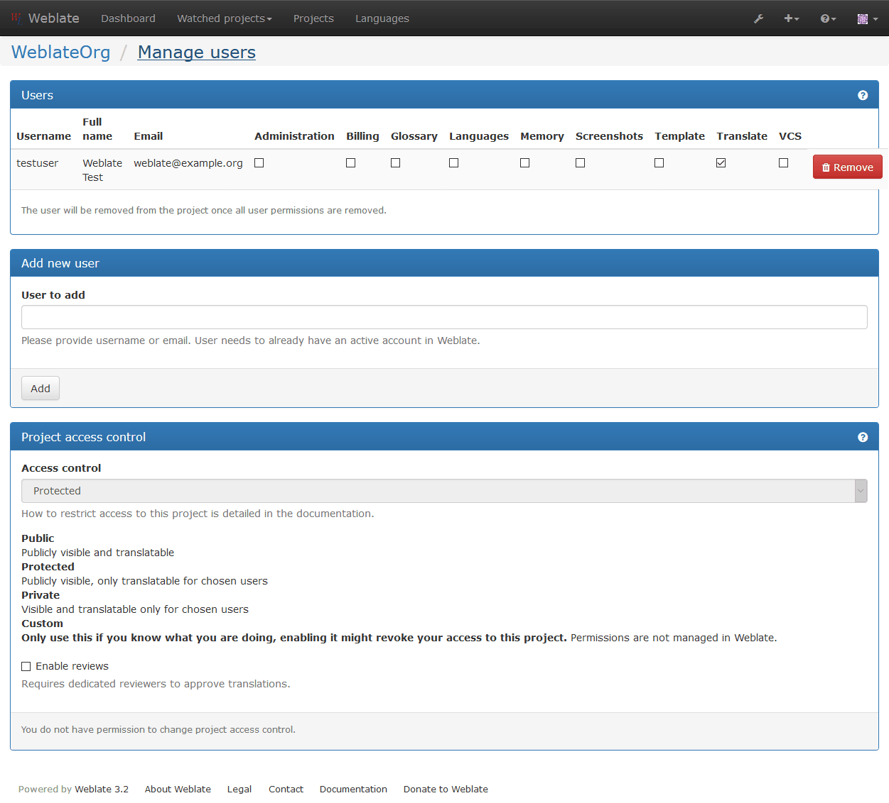

翻訳ワークフロー¶
Weblate は設定により、何種類かの翻訳ワークフローをサポートすることができます。このドキュメントは Weblate の設定方法の完全な一覧ではありません。間違いなくもっと多くのオプションが存在します。ここにリストアップされたもっとも普通の事例を基に、別のワークフローを構築することができるでしょう。
Translation access¶
The Access control is not much discussed in the workflows as each of access control options can be applied to any workflows. Please consult that documentation for information how to manage access to translations.
In following chapters, any user means any user who has access to the translation. It can be any authenticated user if project is public or user having Translate permission on the project.
Translation states¶
Each translated string can be in following states:
- Untranslated
- Translation is empty, it might or not be stored in the file, depending on the file format.
- Needs edit
- Translation needs editing, this is usually result of source string change. The translation is stored in the file, depending on the file format it might be marked as needing edit (eg. fuzzy flag).
- Waiting for review
- Translation is done, but not reviewed. It is stored in the file as a valid translation.
- Approved
- Translation has been approved in the review. It can no longer be changed by translators, but only by reviewers. Translators can only add suggestions to it.
- Suggestions
- Suggestions are stored in Weblate only and not in the translation file.
Direct translation¶
This is most usual setup for smaller teams - anybody can directly translate. This is also default setup in Weblate.
- Any user can edit translations.
- Suggestions are optional way to suggest changes, when translators are not sure about the change.
| Setting | Value | Note |
|---|---|---|
| Enable reviews | disabled | configured at project level |
| Enable suggestions | enabled | it is useful for users to be able suggest when they are not sure |
| Suggestion voting | disabled | |
| Autoaccept suggestions | 0 | |
| Translators group | Users | or Translate with access control |
| Reviewers group | N/A | not used |
Peer review¶
With this workflow, anybody can add suggestions, however they need approval from additional member before it is accepted as a translation.
- Any user can add suggestions
- Any user can vote for suggestions
- Suggestions become translations when they get given number of votes
| Setting | Value | Note |
|---|---|---|
| Enable reviews | disabled | configured at project level |
| Enable suggestions | enabled | |
| Suggestion voting | enabled | |
| Autoaccept suggestions | 1 | you can set higher value to require more peer reviews |
| Translators group | Users | or Translate with access control |
| Reviewers group | N/A | not used, all translators review |
Dedicated reviewers¶
バージョン 2.18 で追加: The proper review workflow is supported since Weblate 2.18.
With dedicated reviewers you have two groups of users - one which can submit translations and one which reviews them. Review is there to ensure the translations are consistent and in a good quality.
- Any user can edit non approved translations.
- Reviewer can approve / unapproved strings.
- Reviewer can edit all translations (including approved ones).
- Suggestions are now also way to suggest changes for approved strings.
| Setting | Value | Note |
|---|---|---|
| Enable reviews | enabled | configured at project level |
| Enable suggestions | enabled | it is useful for users to be able suggest when they are not sure |
| Suggestion voting | disabled | |
| Autoaccept suggestions | 0 | |
| Translators group | Users | or Translate with access control |
| Reviewers group | Reviewers | or Review with access control |
Enabling reviews¶
The reviews can be enabled on project configuration, you can find the setting on bottom of Manage users page (to be found in the Manage/Users menu):
注釈
Depending on Weblate configuration, the setting might not be available to you. For example on Hosted Weblate this is not available for projects hosted for free.